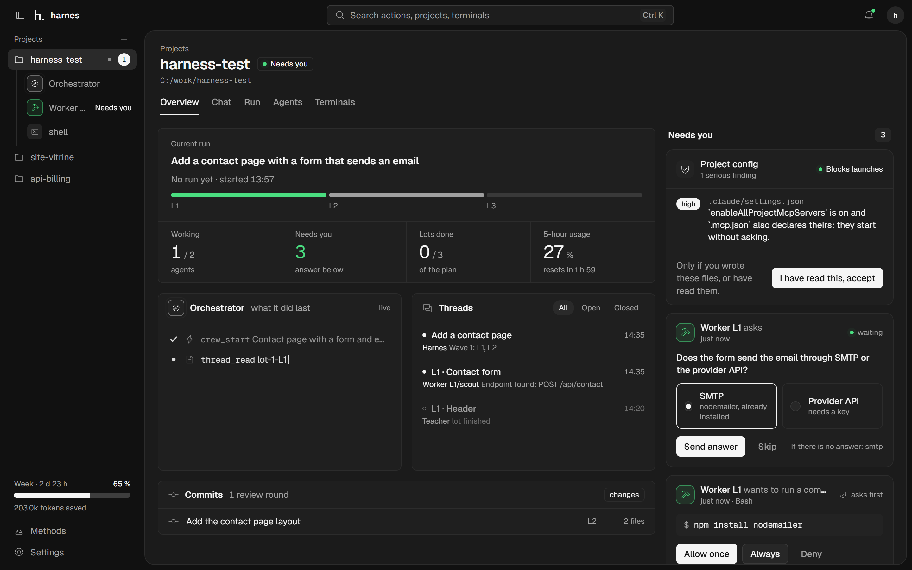
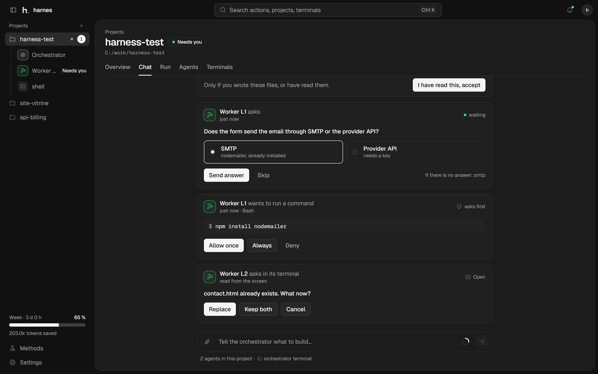
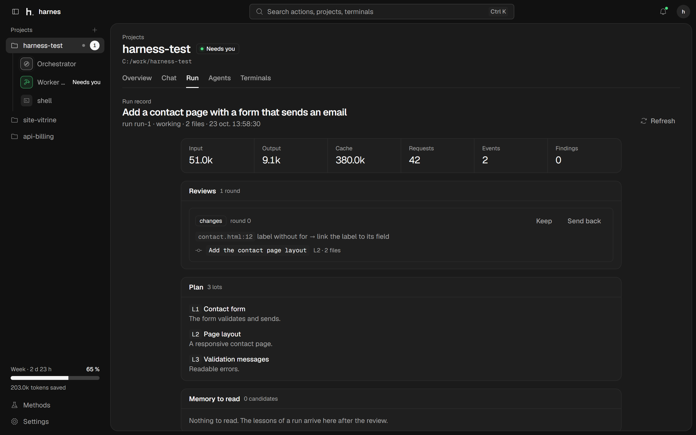
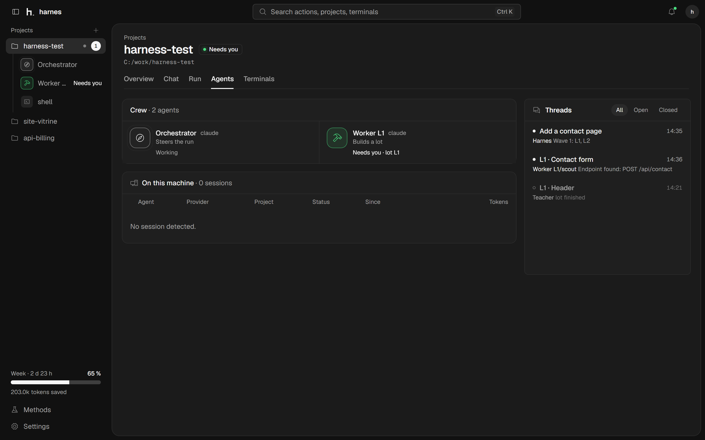
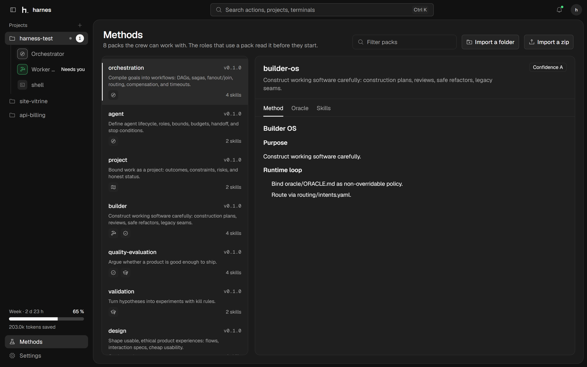
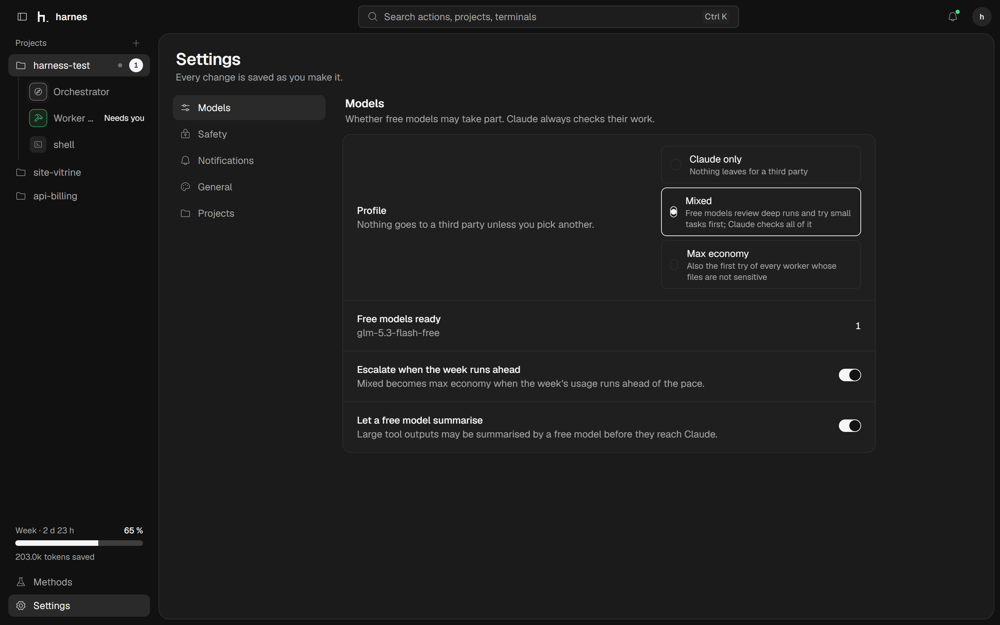

Questions
An agent asks with a typed question: a choice, a yes or no, or a few words. A default stands if nobody answers.
harnes is a desktop cockpit for coding agents. You talk to one orchestrator; it plans, staffs, tests, and comes back only when the bar is met.

One sheet, one question at a time. What needs you comes to you as a card.





Answering folds the card to one line, and the agent goes back to work.
An agent asks with a typed question: a choice, a yes or no, or a few words. A default stands if nobody answers.
Each command waits for Allow once, Always or Deny. Nothing runs behind your back.
Before a crew starts, harnes reads the project's own config and holds the launch on anything serious until you have read it.
Every run takes the same road: brief, plan, bar, work, test, review, gate, you.
Your only interlocutor. Turns your messages into runs and reports back.
Splits the task into lots and waves, so workers never share a file.
Fixes the bar before anyone works, then holds the results against it.
Each builds one lot in its own worktree and tests it.
Read the diff against the plan and the real test results.
Short errands: find code, sum up a file, run one command.
You are the last stop: read the summary and the proposed commits, test it, then approve. Nothing is committed without you.
Windows 11 with Rust, Zig, Node via nvm and Claude Code signed in. Nothing else to set up.
Build it
git clone https://github.com/sha-riyat/harnes
cd harnes/app; npm install
npm run appAdd a project
+ projects
C:\work\calculatorSay what to build
Add a contact page
that sends an email.Open source, MIT. Codex, Gemini CLI and OpenCode can take any role.
Clone it on GitHub